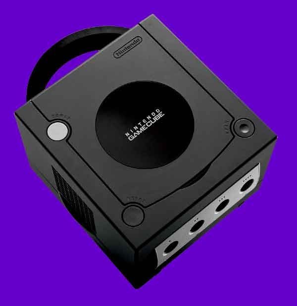

DETAILED SPECIFICATIONS
MPU("Microprocessor
Unit") Custom IBM Power PC "Gekko"
Manufacturing Process 0.18 micron IBM Copper Wire Technology
Clock Frequency 485 MHz
CPU Capacity 1125 Dmips (Dhrystone 2.1)
Internal Data Precision 32-bit Integer & 64-bit Floating-point
External Bus 1.3GB/second peak bandwidth (32-bit address space, 64-bit data
bus 162 MHz clock)
Internal Cache L1: Instruction 32KB, Data 32KB (8 way}, L2: 256KB (2 way)
System LSI Custom ATI/Nintendo "Flipper"
Manufacturing Process 0.18 micron NEC Embedded DRAM Process
Clock Frequency 162 MHz
Embedded Frame Buffer Approx. 2MB, Sustainable Latency : 6.2ns (1T-SRAM)
Embedded Texture Cache Approx. 1MB, Sustainable Latency : 6.2ns (1T-SRAM)
Texture Read Bandwidth 10.4GB/second (Peak)
Main Memory Bandwidth 2.6GB/second (Peak)
Pixel Depth 24-bit Colour, 24-bit Z Buffer
Image Processing Functions Fog, Subpixel Anti-aliasing, 8 Hardware Lights, Alpha
Blending, Virtual Texture Design, Multi-texturing, Bump Mapping, Environment
Mapping, MIP Mapping, Bilinear Filtering, Trilinear Filtering, Anisotropic Filtering,
Real-time Hardware Texture Decompression (S3TC), Real-time Decompression of
Display List, HW 3-line Deflickering filter
The following sound related functions are all incorporated into the System LSI
Sound Processor Custom Macronix 16-bit DSP
Instruction Memory 8KB RAM + 8KB ROM
Data Memory 8KB RAM + 4KB ROM
Clock Frequency 81 MHz
Performance 64 simultaneous channels, ADPCM encoding
Sampling Frequency 48KHz
System Floating-point Arithmetic Capability 10.5 GFLOPS (Peak) (MPU, Geometry
Engine, HW Lighting Total)
Real-world polygon 6 million to 12 million polygons/second (Peak) (Assuming
actual game conditions with complex models, fully
textured, fully lit, etc.)
System Memory 40MB
Main Memory 24 MB MoSys 1T-SRAM, Approx 10ns Sustainable Latency
A-Memory 16MB (81MHz DRAM)
Disc Drive CAV (Constant Angular Velocity) System
Average Access Time 128ms
Data Transfer Speed 16Mbps to 25Mbps
Media 3 inch NINTENDO GAMECUBE Disc based on Matsushita's Optical Disc Technology,
approx 1.5GB Capacity
Input/Output Controller Port x4, Memory Card Slot x2, Analogue AV Output x1,
Digital AV Output x1, High-Speed Serial Port x2, High-speed Parallel Port x1
Power Supply AC Adapter DC12V x 3.25A
Main Unit Dimensions 11.4cm (H) x 15cm (W) x 16cm (D)